Mi nombre es Aldebarán Flores Delgadillo, tengo 16 años, nací en la Ciudad de México el 23 de Noviembre del 2007, me gustan las películas de terror y mis preferidas son "La masacre de Texas", "Pesadilla en la calle Elm 3", "Viernes trece parte 3", "El exorcista" y "Dracula" de Bela Lugosi y en general todos los llamados "Monstruos clásicos de Universal", los libros de terror, en este género mi autor favorito es "H.P. Lovecraft", aventura o historia, en historia mi autor favorito es "Francisco Martín Moreno" y mis libros favoritos de historia son los de su trílogia "Arrebatos Carnales", la historia y su analisis son uno de mis pasatiempos preferidos, escucho mucha música, de 4 a 7 horas diario, me gusta el metal como género musical en general, mis subgeneros favoritos del metal son el death, el NU metal, el black, el doom, el thrash, el heavy y muy poco de glam pero de su eje más agresivo con bandas como "Motley Crue", "Twisted Sister" o "Wasp", a pesar de las pruebas también escucha música diferente al metal, en especial me gusta la música clásica, especialmente la mexicana y la francesa, especialmente por Pedro Infante y Jorge Negrete, además de Edith Piaf respectivamente.
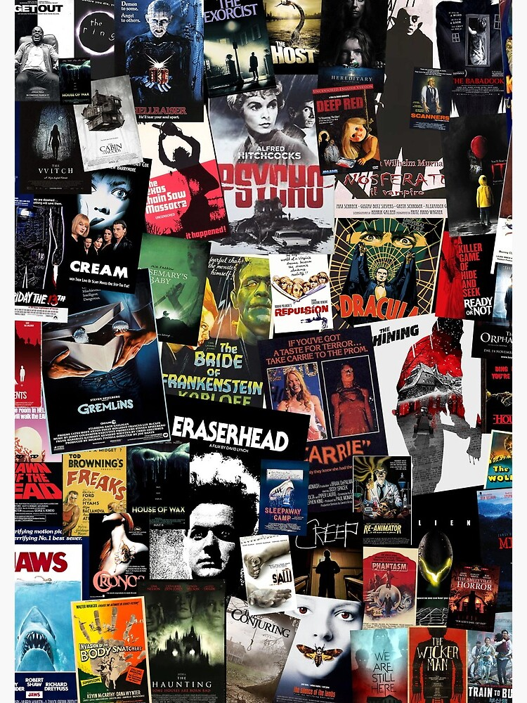 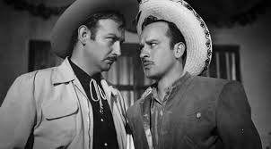 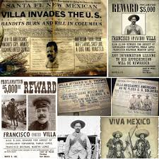
El Death metal clásico o llamado Old School es mi favorito debido a la historia tras las bandas, las anecdotas de sus coterraneos y el patrón de sus escenas nacionales, concepto que en lo personal siempre me ha encantado ya que se pueden encontrar detalles o referencias a bandas anteriores o contemporaneas a esas bandas acontinuación nombrar las escenas más importantes y extremas de los 90s.
Bandas de Florida, Estados Unidos "Morrisound" por Scott Burns
Bandas de Gotenburgo, Suecia "Sunlight Records" por Tomas Skogsberg:
Bandas de Finlandia, diversos estudios (Trabajos destacados o únicos):
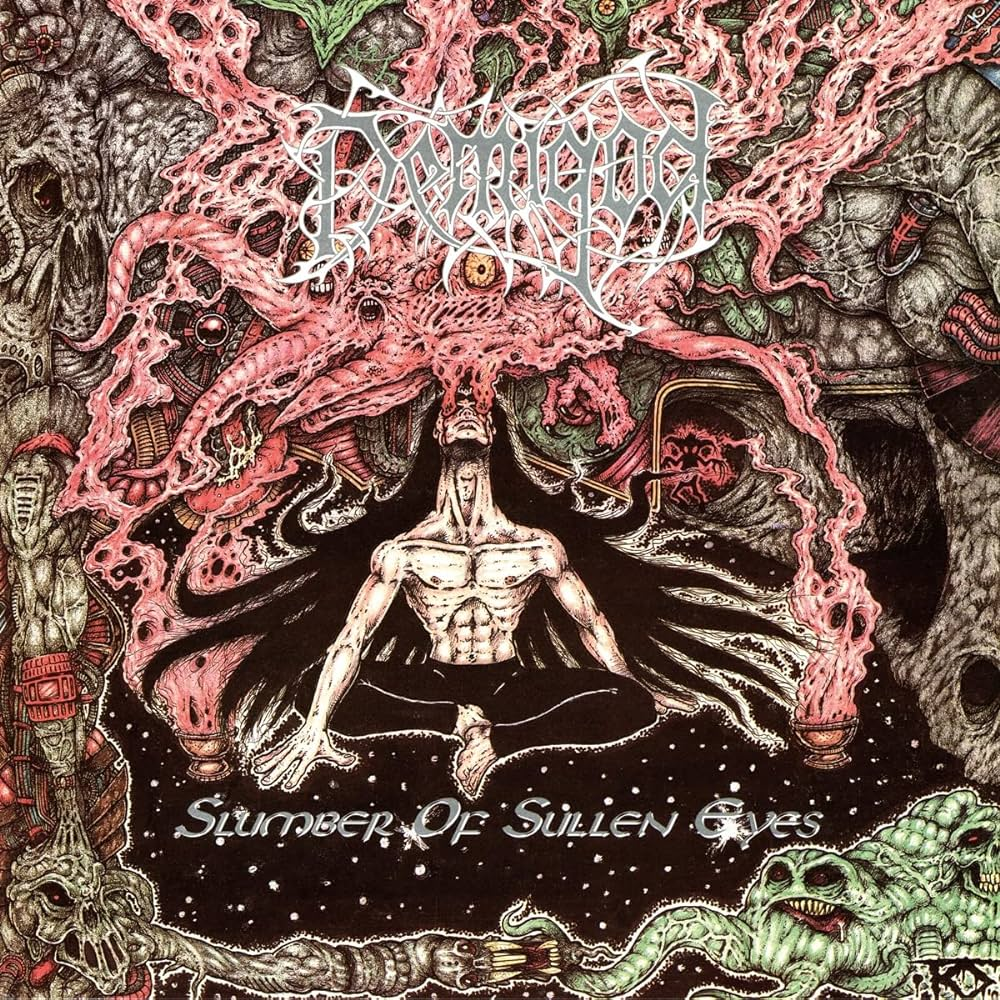 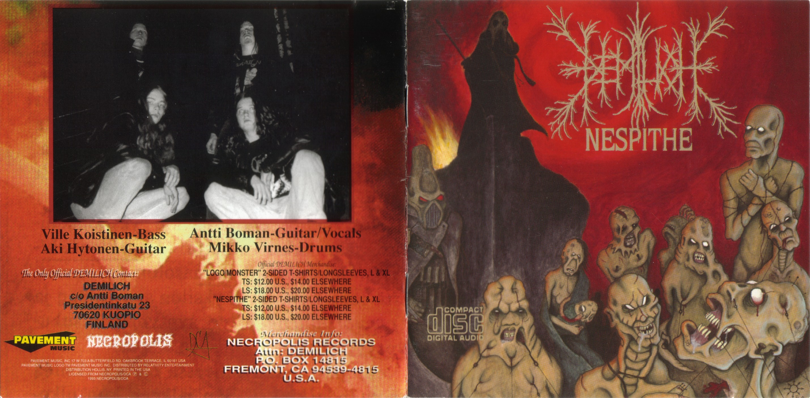
Mi canción favorita de Death metal Finlandes es "Dead Soul" de la banda Demigod, la letra puede tratar de una especie de mounstro o anticristo que va a matarte
El death metal es un subgénero extremo del metal. Se caracteriza por utilizar voces guturales, guitarras con un uso excesivo de overdrive, afinaciones graves para sus instrumentos, percusión rápida (con un dominante uso del doble pedal), complejas estructuras musicales, además de técnicas poco ortodoxas para la composición de los riffs de guitarra. La temática del death metal abarca temas como las historias de terror, la religión, filosofía, asesinos en serie, canibalismo, torturas, entre otros. Por otra parte, se ve influenciado por los problemas físicos y morales del hombre: muerte, belicismo, sociedad, iluminación, filosofía y otros. Normalmente, una banda de death metal está compuesta por un vocalista, dos guitarristas, un bajista y un baterista, es decir, la formación estándar del heavy metal. Entre sus principales exponentes se encuentran grupos como Death, Cannibal Corpse, Obituary o Morbid Angel.

Audio del album debut "Altars of Madness" de la banda Morbid Angel, Chapel of ghouls
Mi banda favorita dentro del subgénero Death Metal es la banda liderada por el ahora difunto, Chuck Schouldiner, DEATH, acontinuación presentare una tabla con su Discografía, incluyendo las primeras DEMOS como "Mantas", primer nombre de la Banda, esta importantisima banda fue no solo una de las pioneras de su escena, si no hasta del género en la que no se detienen los debates acerca de quien saco el primer album de verdadero Death metal, ¿Possesed con su magistral "Seven Churches" del 85, necrophagia con su "Season of the dead" del mismo año 1987 que el otro digno de debate "Scream bloody gore" de la banda Death?, Death y su album debut a mi juicio se llevan el verdadero titulo completo de Death metal sin menospreciar a las gigantescas obras antes mencionadas
Mi canción favorita del album es evil dead la cual presento a continuacion
Mi canción favorita del album es "Mutilation" la cual presento a continuacion, esta canción junto a la del grupo primigenio "Mantas" tiene letras respecto al Gore, en general, la cual obviamente al tener 15 años parece ser una letra compleja y genial, pero la obra de Schouldiner evoluciona con cada lanzamiento y esto marcaria escuela para todas las bandas de Death metal habidas y por haber
Mi canción favorita del album es Pull the Plug la cual presento a continuacion, esta habla acerca de la decisión de morir de los pacientes con enfermedades incurables o díficiles de curar, los cuales preferirían estar muertos a vivir pegados a una máquina toda su vida sin poder vivir libres, la idea de la canción surgio cuando Chuck observaba a gente muriendo afuera de los hospitales por falta de espacio debido a estos pacientes "Vegetales" o en "coma" los cuales solo quitaban vidas indirectamente
Mi canción favorita del album es Living Monstrosity la cual presento a continuacion, esta canción habla acerca del sufrimiento de los bebés o niños nacidos de drogadictos en especial habla de los llamados "cocainomanos" situación que en los 90s acoso a los Estados Unidos por la alza de drogadiccion, cárteles y pandillas, además de los embarazos de las drogadictas, las cuales daban a luz a bebés deformes que podían llegar a nacer "sin ojos, manos y la mitad del cerebro, además de nacer adictos a la cocaína" citando a la canción, una verdadera monstruosidad viviente
Mi canción favorita del album es Lack of Comprehension la cual presento a continuacion, este album marco el fin y el inicio de una era para el Death metal, al ser más tecnico, además de claro, suavizar y empezar a eliminar la critica social de sus letra, haciendolas más introspectivas con los humanos y sus interrelaciones, en especial esta que habla acerca de las personas que culpan a los demás por sus problemas y tristezas, sin darse cuenta que ellos son el problema por su "falta de comprensión" Mi canción favorita del album es The Philopher la cual presento a continuacion, esta letra siguiendo el patrón declarado en human es más técnico e introspectivo, critica a la filosofía y a su efectividad actual tras siglos, ya que ellos no ven ni sienten lo que nosotros si
Mi canción favorita del album es Zero Tolerance la cual presento a continuacion, esta habla acerca de la justicia que debera ser impuesta a toda existencia
Mi canción favorita del album es Scavenger of Human Sorrow la cual presento a continuacion, habla y critica a gente que "se alimenta del miedo" de las demás, aquellos que viven para causarles dolor a otros, este último álbum de Death debido al prematuro fallecimiento de Chuck marco una gran diferencia en su obra ya que este álbum fue más personal ya que ahora más qu nunca las letras eran escritas con el fin de desahogar sus problemas de sus últimos años de vida
Año
Nombre
Alineación
Arte de la portada
1984
Death by metal
Chuck Schouldiner(Guitarra líder), Kam Lee(batería y voz) y Rick Rozz(Guitarra ritmica)
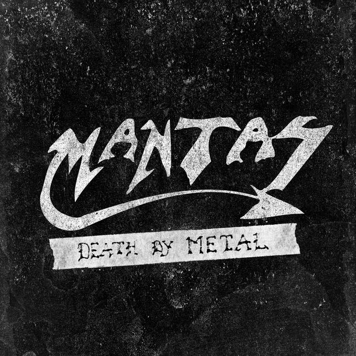
1987
Scream Bloody Gore
Chuck Schouldiner(Guitarra líder y ritmica, bajo, voz) y Chris Reinfert(batería)
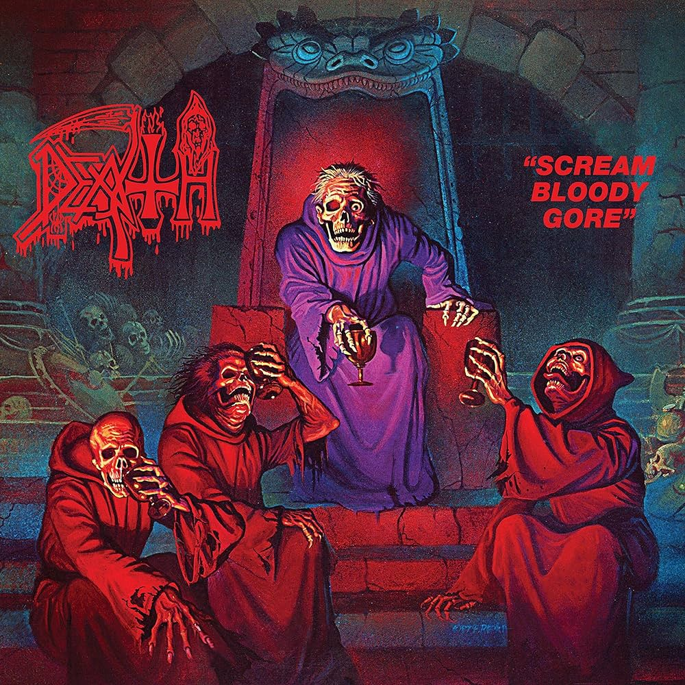
1988
Leprosy
Chuck Schouldiner(Guitarra líder y ritmica, bajo, voz) y Bill Andrews(batería), Rick Rozz(Guitarra ritmica en Born Dead, Forgotten Past, Left to die,Open Casket, Primitive ways y Choke on it
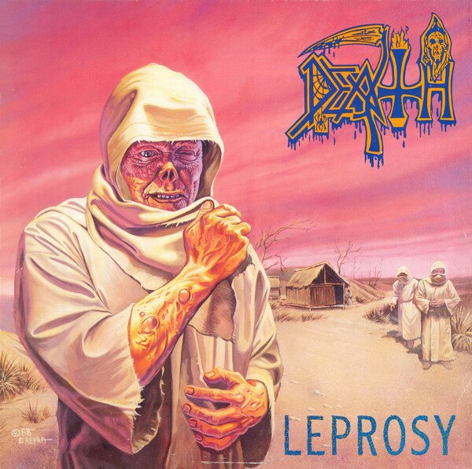
1990
Spiritual Healing
Chuck Schouldiner(Guitarra líder y ritmica, bajo, voz) y Bill Andrews(batería), James Murphy (Guitarras en Within the mind, Low life, Genetic reconstruction y Killing spree) y Terry Buttler (bajo en Altering the future, Defensive personalities,Low life y Genetic reconstruction)
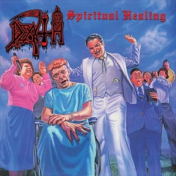
1991
Human
Chuck Schouldiner(Guitarra líder y ritmica, bajo, voz) Sean Reinert(batería), Paul Masvidal(guitarras) y Steve DiGioigio(bajo)
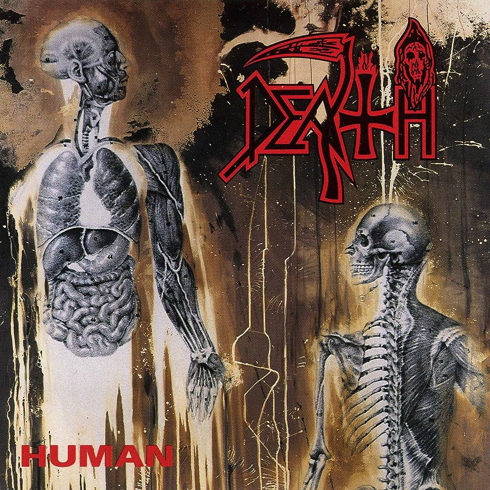
1993
Individual Thought Patterns
Chuck Schouldiner(Guitarra líder y ritmica, bajo, voz) Steve DiGioigio(bajo) y Gene Hoglan(batería)
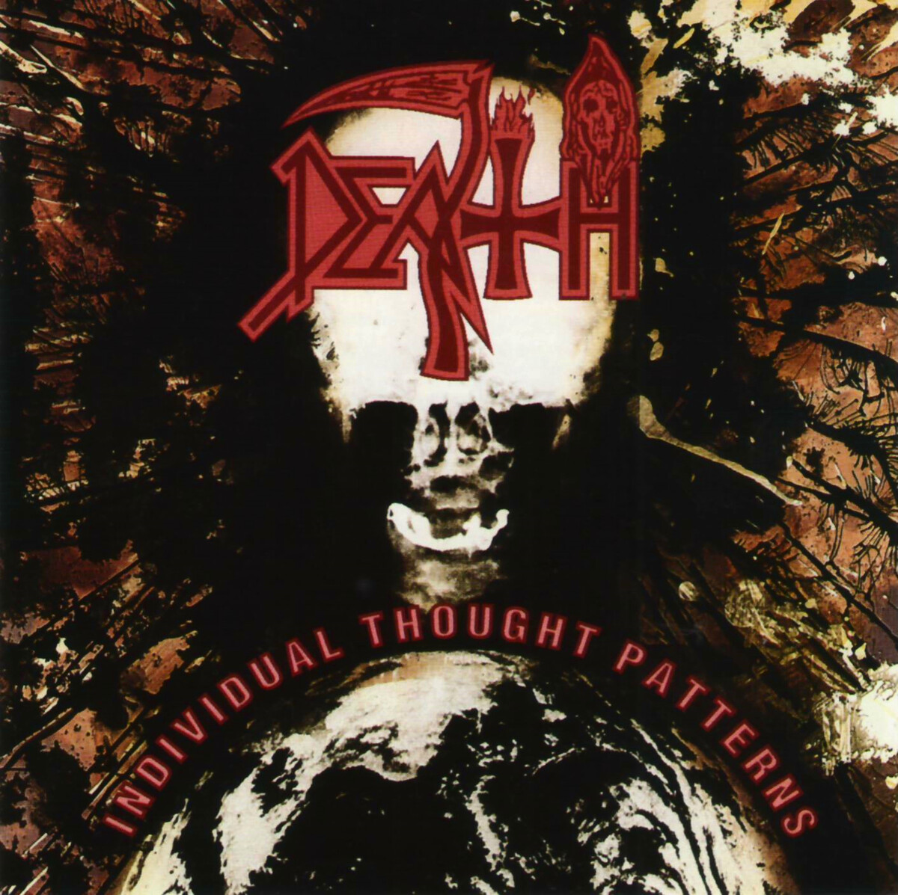
1995
Symbolic
Chuck Schouldiner(Guitarra líder y ritmica, bajo, voz), Bobby Koelble(Guitarras), Kelly Conlon (bajo) y Gene Hoglan(batería)
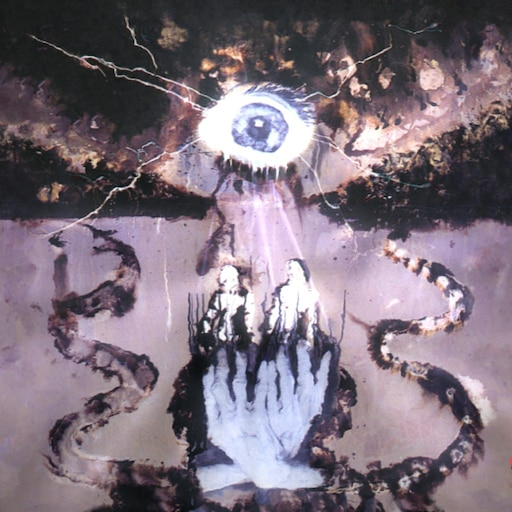
1998
Sound of Perseverance
Chuck Schouldiner(Guitarra líder y ritmica, bajo, voz), Shannon Hamm(Guitarras), Scott Clendenin (bajo) y Richard Christy (batería)
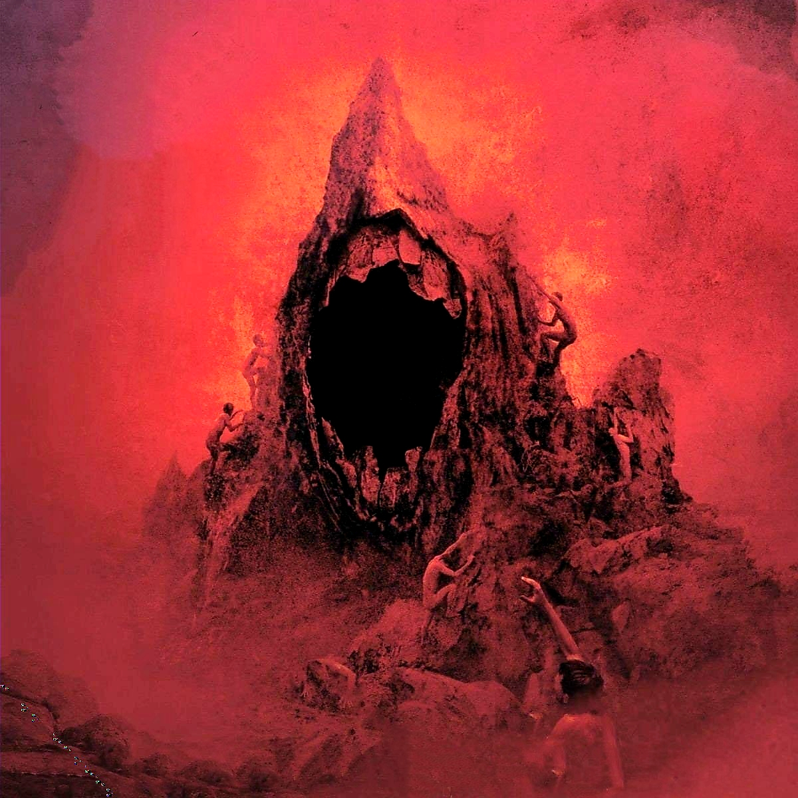
Casi no tengo tiempo para jugar videojuegos pero los del genero "MetroidVania" son mis favoritos debido al lore tras cada historia, personaje, lugar o zona marcado dentro del juego, además de la dificultad de estos donde particularmente mis favoritos son "Hollow Knight" y "Blasfemus"
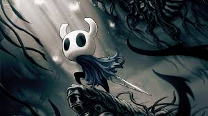 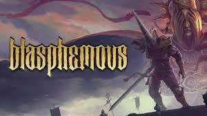